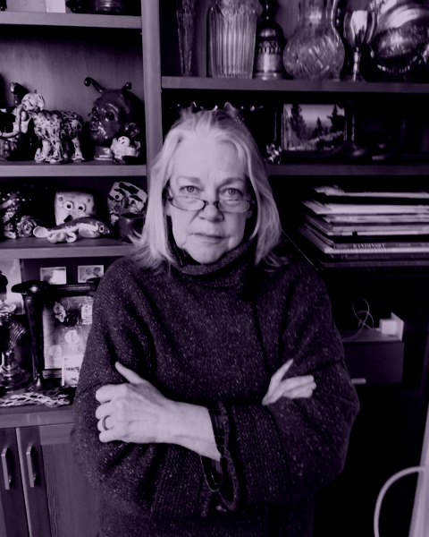
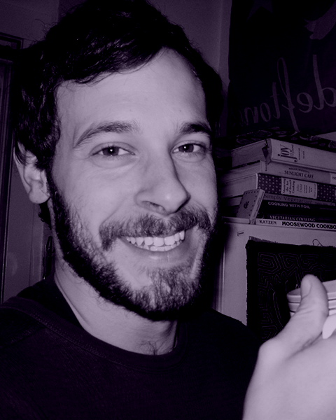
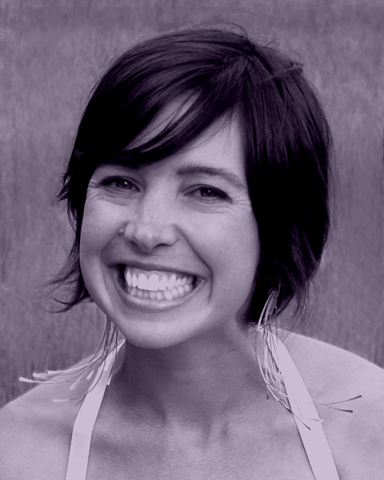
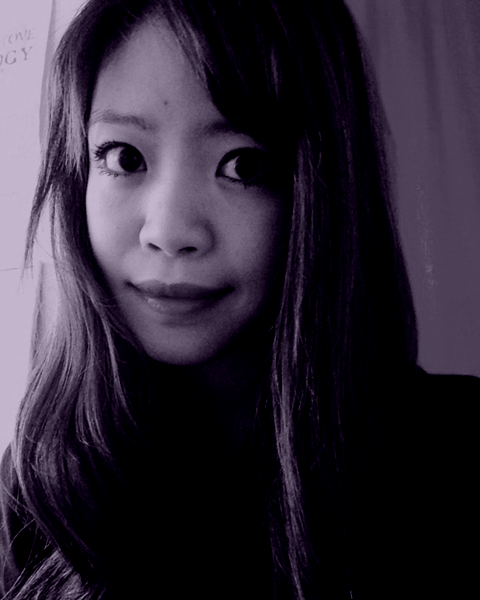

Artists
GAIL GRINNELL
Gail Grinnell is a Seattle-based visual artist who primarily works with textiles. She uses a painterly approach to layering and collaging fabric, often creating large installations that play with light, transparency, and form. Grinnell received her BFA from the University of Washington and has been represented by Francine Seders Gallery and Gail Gibson Gallery. She has been awarded international artist residencies in Spain and Ireland and has received local grants from Artist Trust, the Seattle Office of Arts and Culture, and 4Culture.
Gail Grinnell is a Seattle-based visual artist who primarily works with textiles. She uses a painterly approach to layering and collaging fabric, often creating large installations that play with light, transparency, and form. Grinnell received her BFA from the University of Washington and has been represented by Francine Seders Gallery and Gail Gibson Gallery. She has been awarded international artist residencies in Spain and Ireland and has received local grants from Artist Trust, the Seattle Office of Arts and Culture, and 4Culture.

SAMUEL WILDMAN
Sam Wildman employs his curiosity to pose questions to viewers through interactive art installations. He received his BFA in sculpture from Rhode Island School of Design and has shown his work in galleries, museums, Airbnbs, truck beds, a Canadian spa, and a chicken coop. Wildman’s work has also been featured in Sculpture Magazine, The Stranger, and City Arts Magazine.
Sam Wildman employs his curiosity to pose questions to viewers through interactive art installations. He received his BFA in sculpture from Rhode Island School of Design and has shown his work in galleries, museums, Airbnbs, truck beds, a Canadian spa, and a chicken coop. Wildman’s work has also been featured in Sculpture Magazine, The Stranger, and City Arts Magazine.

ERIC JOHN OLSON
Eric John Olson is a serial collaborator focused on participatory art practices and social engagement. He has been awarded project grants by the City of Seattle, Seattle Public Library and 4Culture. His work has been written about in CityArts Magazine, Stereogum, Vice Magazine and The Stranger. Whether performed, interactive or purely a state of potential, Olson’s work creates a holding space for a kind of radical therapy that unabashedly believes in the power of our collective imagination.
Eric John Olson is a serial collaborator focused on participatory art practices and social engagement. He has been awarded project grants by the City of Seattle, Seattle Public Library and 4Culture. His work has been written about in CityArts Magazine, Stereogum, Vice Magazine and The Stranger. Whether performed, interactive or purely a state of potential, Olson’s work creates a holding space for a kind of radical therapy that unabashedly believes in the power of our collective imagination.
TIA KRAMER
Tia Kramer is an interdisciplinary artist, designer and director strongly influenced by pedestrian interactions with the spaces we inhabit. Kramer studied performance and fiber and material studies at The School of the Art Institute of Chicago (2005) and Macalester College (1999). She has directed site specific performances at Henry Art Gallery, Georgetown Steam Plant, Bellevue Arts Museum, Fort Lawton in Seattle’s Discovery Park, Smoke Farm in Arlington, WA and in downtown Chicago. Her sculptural objects have been exhibited at galleries and museums nationally and internationally. Through collaboration, film and object making she aims to create experiences infused with the unexpectedness necessary to expose overlooked inter-relationships that shift our perception of everyday life.
Tia Kramer is an interdisciplinary artist, designer and director strongly influenced by pedestrian interactions with the spaces we inhabit. Kramer studied performance and fiber and material studies at The School of the Art Institute of Chicago (2005) and Macalester College (1999). She has directed site specific performances at Henry Art Gallery, Georgetown Steam Plant, Bellevue Arts Museum, Fort Lawton in Seattle’s Discovery Park, Smoke Farm in Arlington, WA and in downtown Chicago. Her sculptural objects have been exhibited at galleries and museums nationally and internationally. Through collaboration, film and object making she aims to create experiences infused with the unexpectedness necessary to expose overlooked inter-relationships that shift our perception of everyday life.

JANE WONG
Jane Wong’s poems can be found in anthologies and journals such as Best American Poetry 2015, Best New Poets 2012, Pleiades, Third Coast, and others. A Kundiman fellow, she is the recipient of scholarships and fellowships from the U.S. Fulbright Program, the Fine Arts Work Center, Squaw Valley, and Bread Loaf. A Visiting Assistant Professor at Pacific Lutheran University, she is the author of Overpour (Action Books, 2016).
Jane Wong’s poems can be found in anthologies and journals such as Best American Poetry 2015, Best New Poets 2012, Pleiades, Third Coast, and others. A Kundiman fellow, she is the recipient of scholarships and fellowships from the U.S. Fulbright Program, the Fine Arts Work Center, Squaw Valley, and Bread Loaf. A Visiting Assistant Professor at Pacific Lutheran University, she is the author of Overpour (Action Books, 2016).
